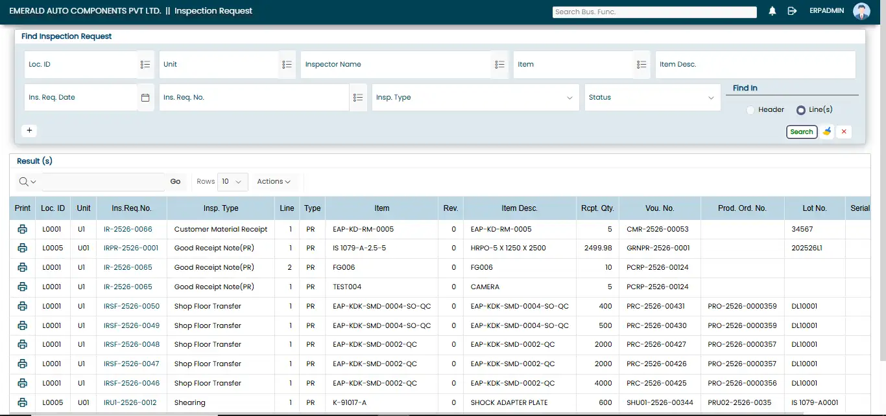
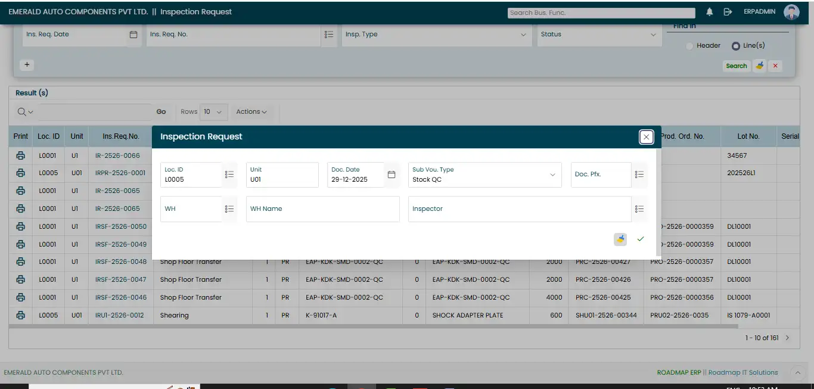
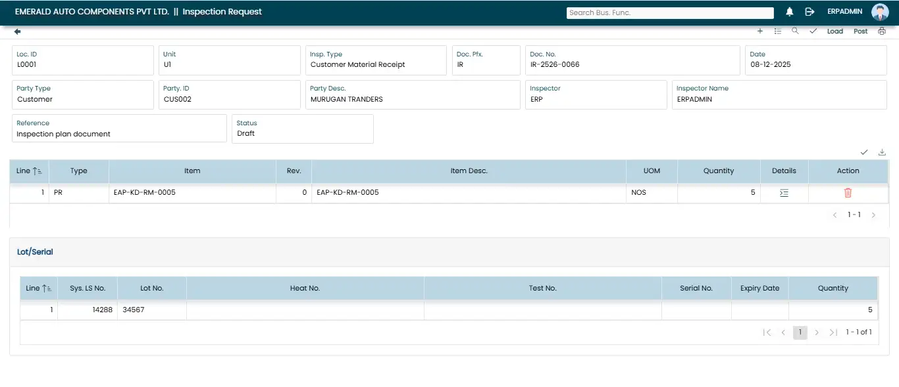

<div data-category="Quality control Management" data-title="Inspection Request" data-updated="December 01, 2025" data-contributors="RoadmapIT" data-breadcrumb="Home,Quality control Management,Inspection Request">
  <div class="page-content">
    <p>Inspection request created from various sources are displayed as follows.</p>

    <h5>Navigation path:</h5>
    <p class="fs-6">Quality Management \ Transaction \ Inspection Request</p>
    
    <h2>Inspection Request – Search</h2>
    <ul style="list-style-type: none; align-content: center">
      <li class="mouse-icon">Search screen displays the list of Inspection request with the relevant details and its status.</li>
      <li class="mouse-icon">User can filter the respective documents by entering the search parameters at the header.</li>
      <li class="mouse-icon">On clicking search button, system displays the results relevant to the search parameters entered.</li>
      <li class="mouse-icon">Using clear icon, entered search parameters can be cleared.</li>
      <li class="mouse-icon">To close the screen, use close icon.</li>
      <li class="mouse-icon">
        By clicking the
        <i class="bi bi-plus fs-5 mx-2 text-primary"></i>
        Add button, we can create new Inspection request entry by entering all the mandatory fields displayed in the Add dialog.
      </li>
    </ul>
    
    <h2>Add Inspection Request</h2>
    <ul style="list-style-type: none; align-content: center">
      <li class="mouse-icon">Inspection request can be created manually only for the Stock QC and Pre-Dispatch type.</li>
      <li class="mouse-icon">For rest of the types, Inspection requests are created while processing the corresponding transactions.</li>
      <li class="mouse-icon">Select Loc ID from LOV, Unit will be auto displayed.</li>
      <li class="mouse-icon">Doc. Date is selected as current date, and can be changed if required.</li>
      <li class="mouse-icon">Select the Doc. Pfx.</li>
      <li class="mouse-icon">Select the W/H.</li>
      <li class="mouse-icon">Select the Inspector.</li>
      <li class="mouse-icon">
        Click
        <i class="bi bi-check-lg fs-4 mx-1 text-success"></i>
        to save the header and the screen will be navigated.
      </li>
    </ul>
    
    <h2>Inspection Request – Processing</h2>
    <ul style="list-style-type: none; align-content: center">
      <li class="mouse-icon">Inspection Type will be appropriately displayed for which the request has been created.</li>
      <li class="mouse-icon">The Lot serial details of the items will be viewed in the Lot / Serial dialog.</li>
      <li class="mouse-icon">In case of Subcontract and production completions, the process for which the request is being created will be viewed.</li>
      <li class="mouse-icon">Click on Post and the document will be posted.</li>
    </ul>
  </div>
</div>